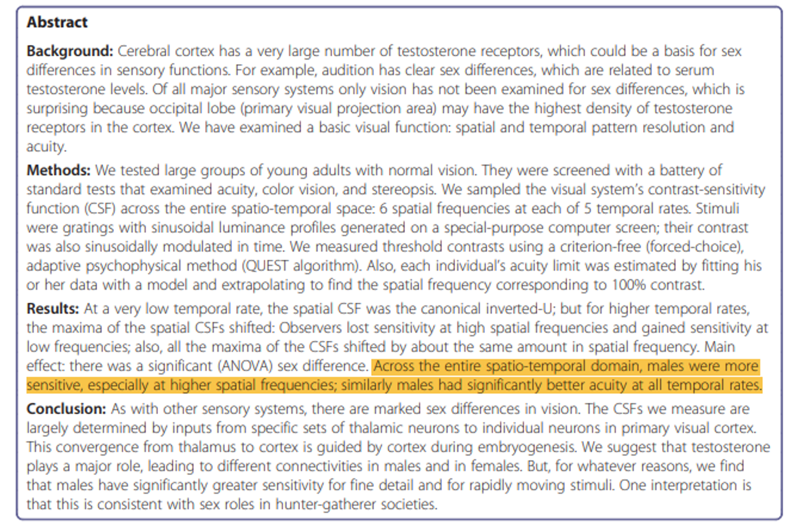
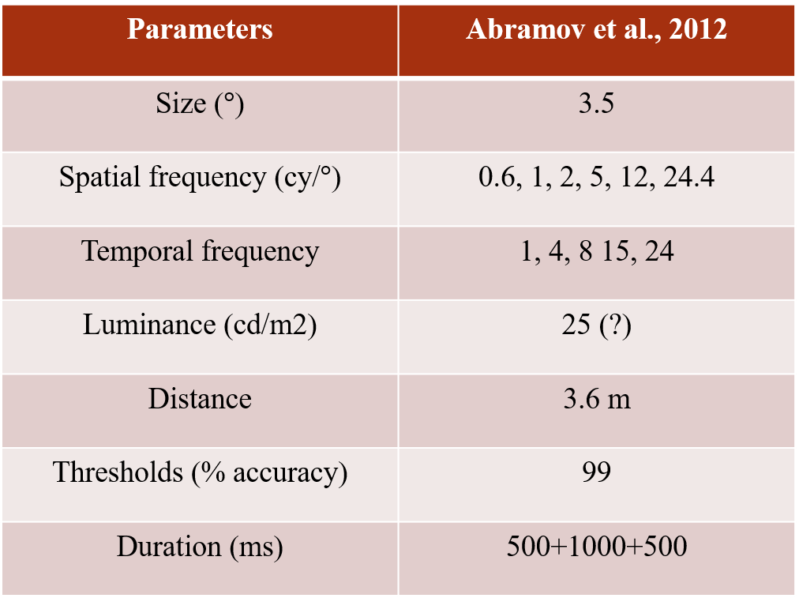
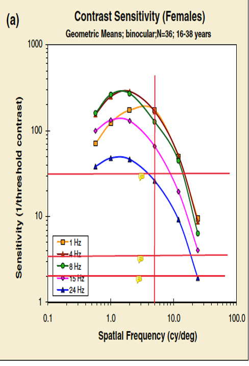
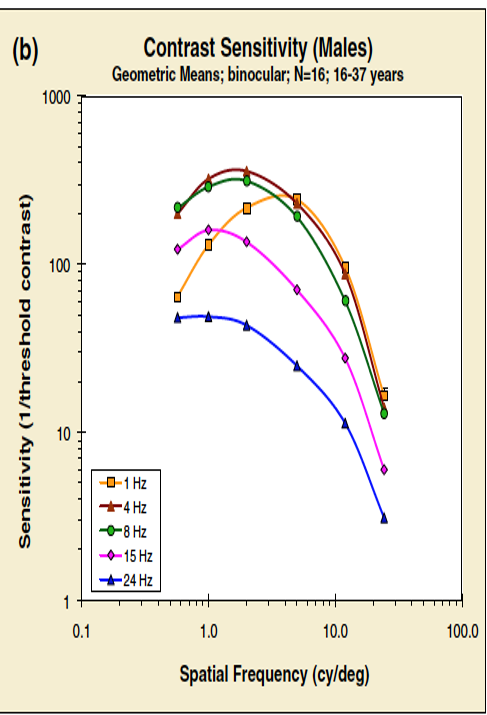
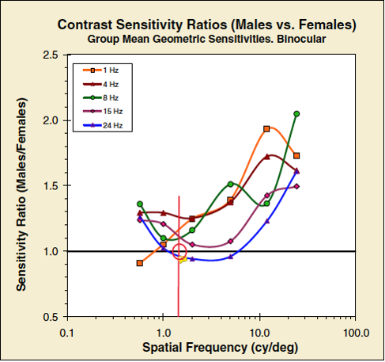
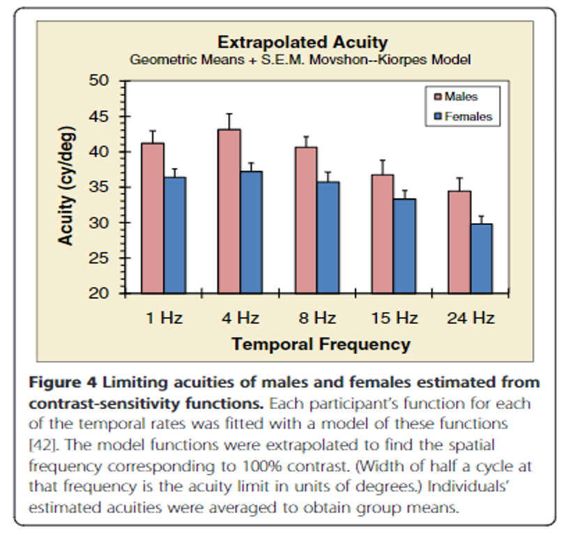

How to Read and Academic Paper
Three Points for Reading a Paper
Why does this paper matter?
- Read carefully of just skim
- The goal of this research
- Why is it interesting for us to think/talk about?
What does it talk about?
- Research Question?
- Hypotheses?
- Findingis?
What are the methods it used?
- Population (age, gender, …), time, locations, etc.
- What are DVs and IVs?
- How are thy measuresed? Why to use it rather than the other?
My Reading Sequence
- Abstract
- Very, very important
- It can answer most of the above questions
- If you find terminiology you are not familiar with, what do you do?
Methods + Analysis
Result part
- Plots
- Reflections
- Was the research question answered in this paper?
- Did the methods measure what the researchers want to measure?
- Were the finidings consistent with the hypotheses? Do they suprise you?
- Find some explanations in the introductions and discussion part
Lets Do It!
Abramov, I., Gordon, J., Feldman, O., & Chavarga, A. (2012). Sex & vision I: Spatio-temporal resolution. Biology of Sex Differences, 3(1), 20.
Example Abstract

Methods
- Participant 36 females [16-38] Mean = 23.5 16 males [16-37] Mean = 24.3
- Measures
- Visual Acuity
- Color Vision
- Binocular Depth perception (stereopsis)
- Contrast sensitivity task
- Stimuli
What are DVs and IVs?

Relate Plot with Main Findings
 
Ratio

Mean +- Standard Error

Discussion
- Any questions about this paper?
- Was the research question answered in this paper?
- Did the methods measure what the researchers want to measure?
- Do the findings surprise you?
- What is the implication of these findings?
- Any critique? What can be improved in this study?